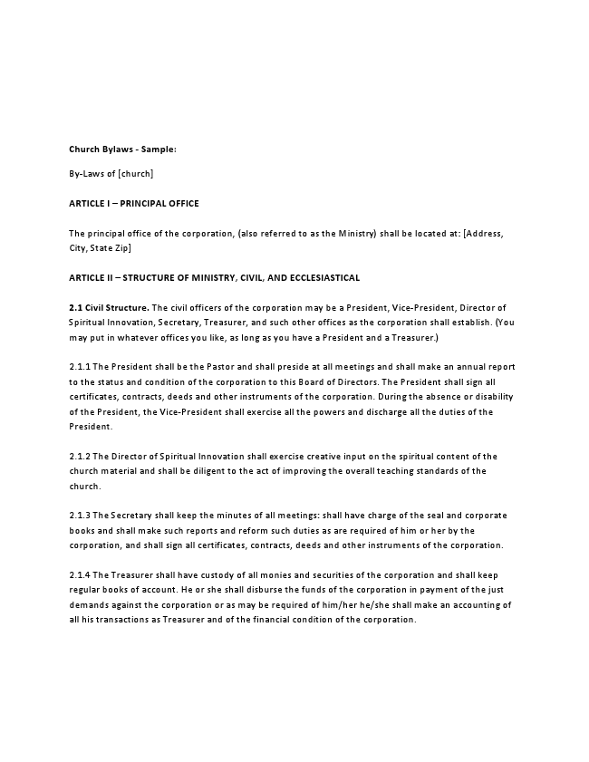

Church Bylaws - Sample:
By-Laws of [church]
ARTICLE I – PRINCIPAL OFFICE
The principal office of the corporation, (also referred to as the Ministry) shall be located at: [Address, City, State Zip]
ARTICLE II – STRUCTURE OF MINISTRY, CIVIL, AND ECCLESIASTICAL
2.1 Civil Structure. The civil officers of the corporation may be a President, Vice-President, Director of Spiritual Innovation, Secretary, Treasurer, and such other offices as the corporation shall establish. (You may put in whatever offices you like, as long as you have a President and a Treasurer.)
2.1.1 The President shall be the Pastor and shall preside at all meetings and shall make an annual report to the status and condition of the corporation to this Board of Directors. The President shall sign all certificates, contracts, deeds and other instruments of the corporation. During the absence or disability of the President, the Vice-President shall exercise all the powers and discharge all the duties of the President.
2.1.2 The Director of Spiritual Innovation shall exercise creative input on the spiritual content of the church material and shall be diligent to the act of improving the overall teaching standards of the church.
2.1.3 The Secretary shall keep the minutes of all meetings: shall have charge of the seal and corporate books and shall make such reports and reform such duties as are required of him or her by the corporation, and shall sign all certificates, contracts, deeds and other instruments of the corporation.
2.1.4 The Treasurer shall have custody of all monies and securities of the corporation and shall keep regular books of account. He or she shall disburse the funds of the corporation in payment of the just demands against the corporation or as may be required of him/her he/she shall make an accounting of all his transactions as Treasurer and of the financial condition of the corporation.
2.1.5 The officers of the corporation shall hold offices until their successors are duly elected and qualified.
2.1.6 The Board of Directors shall meet at least once each year, either in person or electronically, but special meetings may be called if and when the same may become necessary.
2.2 Ecclesiastical Structure. Ecclesiastically, the Ministry shall be composed of:
2.2.1 The Board of Directors
ARTICLE III – THE BOARD OF DIRECTORS, ITS ORGANIZATION, POWERS AND DUTIES
3.1 The Board of Directors shall be at least 3 in number and shall have the power to exercise all powers necessary for the operation of the Ministry, expressed or implied, which shall be necessary and proper to carry out all the executive functions, and all other powers both civil and ecclesiastical as it may determine.
3.1.1 The members of the Board of Directors shall be elected for a term of 5 years. The Terms shall be computed from the day of their election and each member may hold office until such time as an election by the members can he had.
3.1.2 In the event of vacancy in the Board of Directors occurs, remaining members of the Board of Directors shall fill such vacancy by a majority vote at a duly held meeting until the successor has been duly elected and qualified.
3.2 The Pastor. The Pastor may be the President and may be appointed by the Board of Directors, which shall authorize the Pastor and any other officers, or agents of the Ministry, or any other officer so authorized by these Bylaws, to enter into any contract or execute and deliver any instrument in the name of or on behalf of the Ministry, and such authority may be general or may be confined to specific incidence.
3.3 The Secretary. The Secretary shall be elected by the Board of Directors or appointed by the President.
3.3.1 The Secretary shall keep minutes of the proceedings of its members, Board of Directors, committees, councils and other Boards or tribunals authorized by the Board of Directors and these records shall be kept at the principal office of the Ministry.
3.4 The Treasurer. The Treasurer shall be elected by the Board of Directors or appointed by the President. The Treasurer shall be the treasurer of the Ministry, and shall have custody of all monies and securities of the Ministry and shall make an accounting of all the Ministry transactions.
3.4.1 All checks, drafts or orders for the payment of money, notes , evidence of indebtedness issued in the name of the corporation shall be signed by the Pastor or other officers or agents of the corporation, in such manner as shall from time to time be determined by resolution of the Board of Directors. In the absence of such direction from the Board of Directors the Pastor may sign on behalf of the Ministry.
3.4.2 All funds of the Ministry shall be deposited as required to the credit of the corporation in such banks, trust companies or other depositories as the Board of Directors or the Pastor may elect.
3.4.3 The Board of Directors or the Pastor may accept on behalf of the Ministry any contributions, donations, gifts, including real property, bequest or devise for any purpose of the Ministry. (Malachi 3:10; Luke 6:38; I Corinthians 16:1; I Corinthians 9:6-8).
3.4.4 The Treasurer shall keep correct and complete financial records of all Ministry account(s). All books and records of the Ministry may be inspected by any member, or agent, for any purpose at any reasonable time.
3.4.5 The treasurer shall be authorized to appoint personals to assist the Treasurer in carrying out the duties and functions of the Treasurer’s Office.
ARTICLE IV – MEETINGS
4.1 The annual meeting of the Ministry shall be held on the first Tuesday of May of each year. At that meeting Directors shall be nominated and elected to office as appropriate.
4.2 Special Meetings may be called by the Board of Directors or the Pastor as they in their discretion deem necessary. Notices for the calling of such special meetings shall be given to all members in writing with 3 days prior written notice.
ARTICLE V – RULES AND REGULATIONS
5.1 The Board of Directors may adopt such rules of procedure and regulations governing the conduct of its business and the organization of the Ministry as they may deem necessary, proper and expedient.
5.1.1 There can be no appeal from the decisions and determinations of the Board of Directors.
ARTICLE VI – AMENDMENTS TO THE BYLAWS
The provisions of the Bylaws may be modified, altered, or amended by two-thirds majority vote of the members of the Board of Directors at a regular or special meeting. As soon as the proposed amendments have been adopted as herein provided, results of the vote shall be announced by the Pastor and declared adopted by the Chairman of the Board of Directors, whereupon such amendments shall be in full force of effect.
IN WITNESS WHEREOF, I have hereunto set my hand and seal, acknowledged and filed the foregoing Articles of Incorporation under the laws of the State of [State] this day of [Month], [Year].
, Incorporator Signature of Incorporator
Print Name of Incorporator